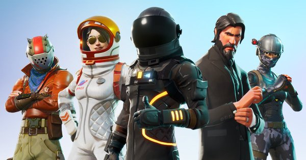

Game Till Death
Welcome to Game Till Death where you can find tips, tricks, easter eggs and learn about upcoming video games.

Spider Man ps4
In Spiderman, Peter Parker is 23 years old and interning at a laboratory while about to graduate from college. Peter has been Spider-Man for eight years and has settled into his role as protector of New York City. Early in the story, Spider-Man defeats Wilson Fisk. Afterwards, a new gang emerges known as the Inner Demons who are taking over Fisk's territory. Spider-Man arrives at a construction site owned by Kingpin and must defend Kingpin's men who are under attack by the Inner Demons. While fending off the Inner Demons from the construction site, Peter learns that Martin Li, one of New York's most prominent philanthropists, leads the Inner Demons under his alter-ego Mister Negative.Martin also runs the F.E.A.S.T. shelters located across the city, which complicates things for Peter's personal life as his Aunt May works at F.E.A.S.T.
Kingdom Hearts 3
KINGDOM HEARTS III tells the story of the power of friendship as Sora and his friends embark on a perilous adventure. Set in a vast array of Disney and Pixar worlds, KINGDOM HEARTS follows the journey of Sora, a young boy and unknowing heir to a spectacular power. Sora is joined by Donald Duck and Goofy to stop an evil force known as the Heartless from invading and overtaking the universe.
Red Dead Redemption 2
Red Dead Redemption 2 (stylized as Red Dead Redemption II) is an upcoming Western-themed action-adventure video game developed and published by Rockstar Games. It is scheduled to be released for PlayStation 4 and Xbox One on October 26, 2018. The game is a prequel to the 2010 title Red Dead Redemption and will be the third entry in the Red Dead series. It follows the story of outlaw Arthur Morgan, a member of the Dutch van der Linde gang.